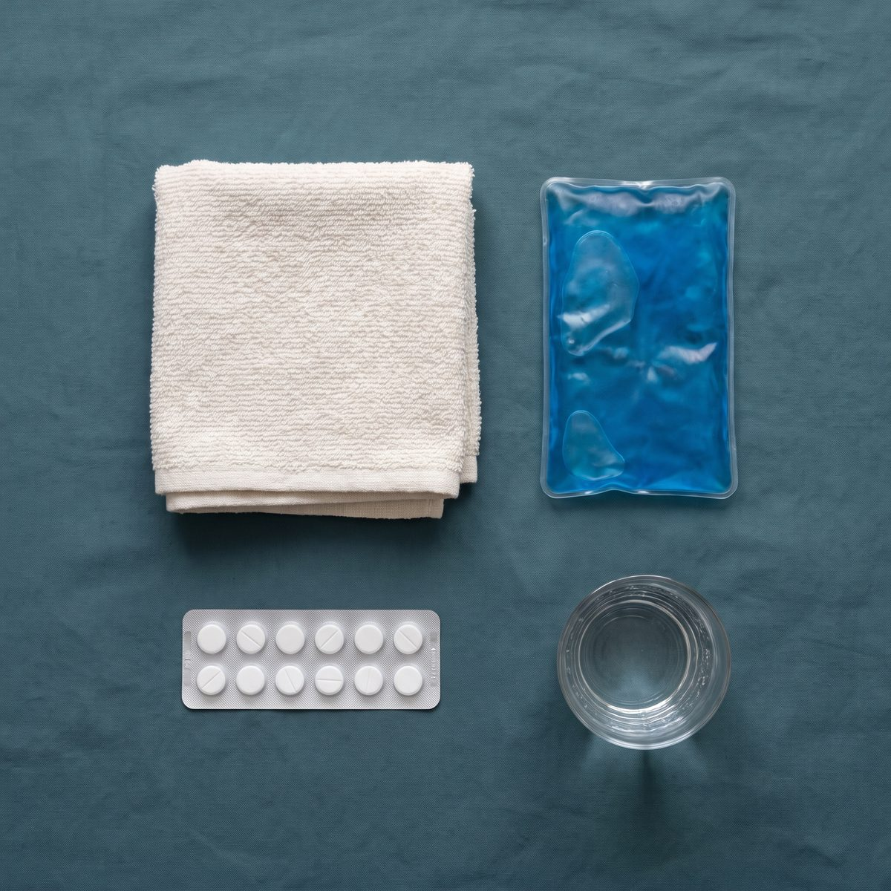

Home / After your vasectomy
Go home. Rest. Take it easy for a week.
Your post-procedure instructions, in full. Keep this page handy — you’ll also leave with a printed copy and your doctor’s contact details.
The one instruction that matters most
Avoid heavy lifting — anything involving straining — along with jogging, cycling and working out for 7 days, and longer (up to 2 weeks) if you can manage it. Failure to follow this advice puts you at higher risk of a scrotal haematoma.
What to expect, and when
The first three months.
Most men feel back to normal in about seven days. Some recover more quickly, some take up to two weeks. Either is normal.

-
The rest of today
Go home and rest
After your vasectomy it is recommended you go home and rest for the remainder of the day. You may feel some discomfort in the testicles or the abdomen.
-
First few days
Pain relief
For the first few days we recommend Paracetamol (2 tablets, 4 times a day) and Nurofen (400 mg, 3 times a day).
-
From day one
Showering is fine
You may take a daily shower once you get home.
-
Leave it alone
The wound
You’ll have a small wound on the scrotum where we performed the operation. These close on their own and don’t need stitches. Try not to fiddle with it, as it may re-open. Very occasionally we need to make two openings to complete the procedure — we’ll tell you during the operation if that’s the case.
-
One week
No sex or masturbation
Wait a week after your procedure — earlier may upset the surgical site.
-
A couple of weeks
Bruising is normal
If there was more bleeding than usual during the operation you may get black or blue discolouration around the scrotum, or even tracking up onto the penis. Don’t worry — this is normal, and only a small amount of blood can have a dramatic effect. It goes away after a couple of weeks.
-
Three months
Your semen analysis
You must complete your post-vasectomy semen analysis at 3 months and after at least 20 ejaculations, to confirm the vasectomy has worked. Assume you are fertile until we tell you otherwise.
Average time to feeling back to normal: about 7 days
Something worrying you? Call us on 1800 SNIPME
24-hour after-care support
If anything doesn’t feel right, call us.
You leave with your doctor’s contact details. Use them.